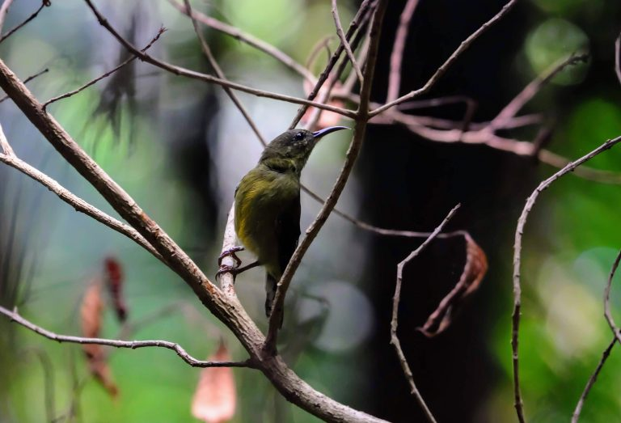

MacRitchie Reservoir, a nature’s playground for those who love the great outdoors!
Nature lovers are no strangers to MacRitchie Park, a go-to location for hiking, IG shots or a much-needed breather from the rigours of corporate life. But while the famous treetop walk is often the star of the show, there are plenty of other things to do in the area that have been lying under the radar as well.
Drone video of MacRitchie Reservoir
Jump to: Explore the reservoir on a kayak
Jump to: Go freshwater fishing
Jump to: Animals - Monkey, sunbird and monitor lizard!
The TreeTop Walk (TTW) is the highlight of several long hiking routes in the Central Catchment Nature
Reserve that brings visitors through different stages of mature secondary forest. Visitors can observe the
different layers of the forest – emergent, canopy, tree, shrub and ground layers.
From the entrance, the first sight that you’re likely to catch is people kayaking away in the tranquil waters. Most might enter the area to hike but for a change of scenery, you can also rent a kayak from Paddle Lodge to explore the reservoir park from the waters.
Kayaking is friendly to first-timer, both single and double sit-on-top kayaks are available for rent.
Click here to book your kayaking session.
For further information, you could also send an enquiry email by clicking this
MacRitchie is one of the few public places in Singapore you can fish at – at least legally. Since it’s a freshwater body, there’s no need to worry about getting sandy or sticky, as you would while fishing by the sea.
There’re plenty of interesting plants and wildlife along this route, so make sure to keep your eyes peele :)
Long-tailed macaque
Sunbird

Wild Boar
Monitor Lizard
Map of MacRitchie Reservoir
Click here to download PDF